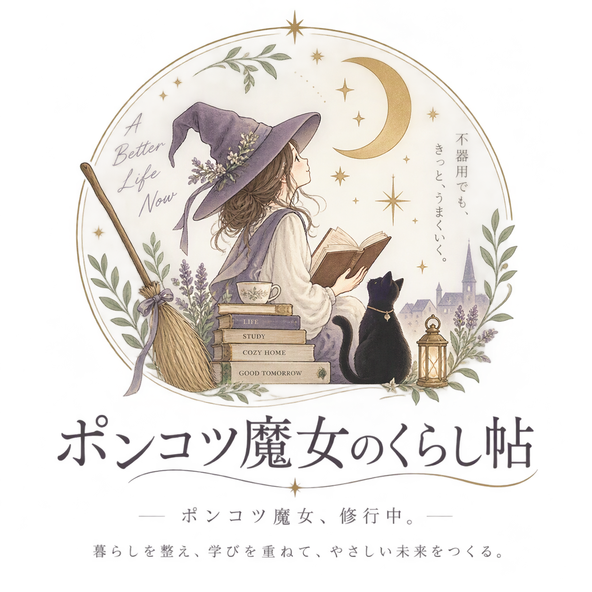

認可保育園の申し込みで学んだこと
提出書類や注意点をまとめました。


ポンコツ魔女、修行中。
毎日少しずつ暮らしを整えながら、 子育て・お金・仕事・学び直しを記録しています。
誰も教えてくれなかった 暮らし・お金・仕事・子育てを学び直しながら、 昔の自分のように迷っている人へ届ける場所です。
提出書類や注意点をまとめました。
ITと英語の勉強メモです。
はじめまして。ポンコツ魔女どろしーです。 子育て・仕事・学び直しに奮闘しながら、 暮らしを整える記録を綴っています。